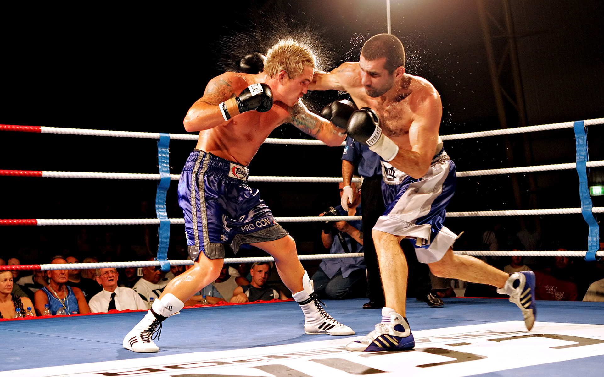
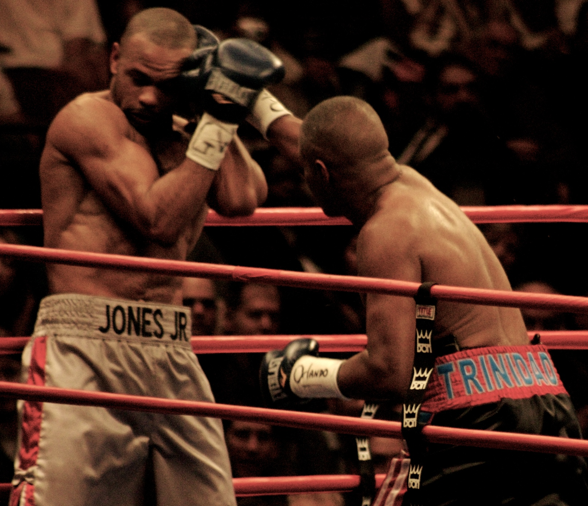

Бокс — контактный вид спорта, единоборство, в котором спортсмены наносят друг другу удары кулаками обычно в специальных перчатках. Рефери контролирует бой, который длится до 12 раундов. Победа присваивается тому из противников, который набрал в итоге большее число очков, либо победителем объявляют того боксера, которому удалось сбить соперника с ног, после чего последний не смог подняться в течение десяти секунд (нокаут); травма, не позволяющая продолжать бой, может стать причиной т. н. технического нокаута. Если после установленного количества раундов поединок не был прекращён, то победитель определяется оценками судей.

История бокса.
История бокса насчитывает не одну тысячу лет. Разного рода упоминания о кулачных боях встречаются в Египте (изображения на фресках), а также на минойских и шумерских рельефах. По одним данным первые находки датированы 4000 лет до н.э., по другим 7000 лет до н.э. Принято считать, что спортивным видом единоборств бокс стал в 688 году до н.э., после того как был включен в программу античных Олимпийских игр. Родина современного бокса – Англия (начало XVII века). Основателем и первым чемпионом по боксу принято считать Джеймса Фигга. Позже он открыл академию бокса и начал обучать всех желающих искусству рукопашного боя. В 1867 году журналистом Джоном Грэхэном Чемберсом был разработан первый свод правил по боксу. В них оговаривались: размер ринга, вес перчаток, длительность раундов и т.д. Позже правила легли в основу современных правил в боксе. В 1904 году бокс был включен в программу Олимпийских игр.
| Список запрещённых приёмов: | Экипировка: | |
|---|---|---|
|

|
|